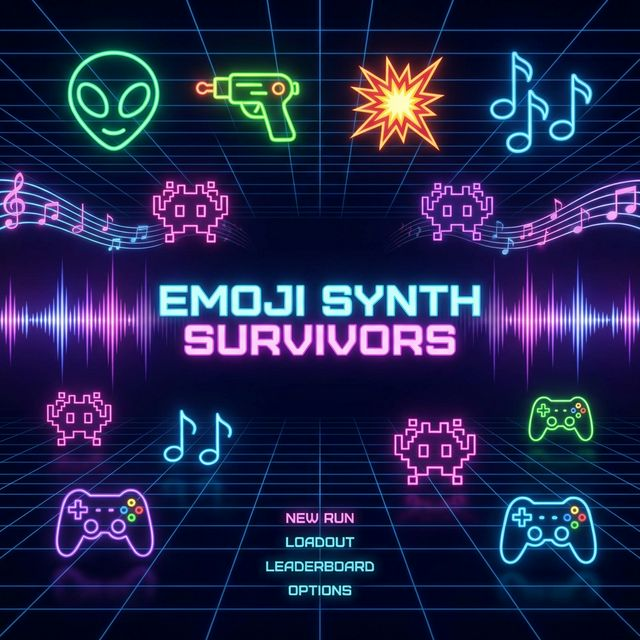

Emoji Synth Survivors
The chaos of survival, the rhythm of creation.

Game Overview
Pitch
A rhythmic bullet-heaven where every kill is a beat and every level is a new track. Transform the chaos of survival into a musical masterpiece through real-time procedural audio synthesis.
Genre
Musical Roguelite / Bullet Heaven / Procedural Synth
Key Features
- Live Audio Synthesis: No pre-recorded loops. Music is generated on-the-fly via Web Audio API.
- Combat Rhythm: Enemy eliminations trigger drum hits and synth stabs quantized to the current BPM.
- Procedural Composition: Player upgrades add new instruments (Bass, Lead, Arp) to the growing track.
- Visual Synesthesia: Neon emoji graphics pulse and glow in perfect sync with the audio frequency.
Core Gameplay Mechanics
Survival Loop
Move with WASD. Collect XP gems dropped by enemies to level up. Choose musical upgrades that also enhance your combat abilities.
Dynamic composition
Instead of manual upgrades, the track evolves based on time and tactical progression. New layers (Arps, Pads, Leads) are introduced automatically at key musical phrasing points (every 32 or 64 measures).
Musical Narrative & Composition
The game follows the structure of a complete electronic music track. The audio isn't just a background; it is the gameplay progression.
- The Composition Cycle:
- Intro (0-1 min): Percussion and sparse bass. Low enemy density.
- Build-up: Intensity increases. Emojis move faster. Arpeggios fade in.
- The Drop: Enemy screen wipe. Bass becomes heavy and distorted. Visuals pulse at max intensity.
- Bridge/Break: Music strips back. Enemies spawn in rhythmic patterns rather than hordes. A moment for the player to breathe and "re-tune".
- Outro/Climax: All layers active. High-stakes survival as the track reaches its finale.
- Intensity-Driven Enemy Density: The number and speed of emojis are mapped directly to the current musical energy level (Energy RMS).
- Auto-Progressive Layers: New oscillators and effects are initialized by the Tone.js scheduler as the game reaches predefined "track markers".
Starting Genre: Deep House
The first "level" or track follows the Deep House aesthetic to provide a hypnotic, steady progression.
- Tempo: A steady 124 BPM (the "Golden Ratio" of house).
- The Four-to-the-Floor: Every 👾 kill reinforces the 4/4 kick drum pattern.
- Atmospherics: Lush, reverb-heavy synthesizer pads and minor 7th / 9th chords to create a "deep" and soulful vibe.
- Sub-Bass: Smooth, sine-based basslines that pulse with the kick (Sidechain effect).
- Percussive Shakers: High-frequency emojis (💎) add rhythmic complexity (16th notes) as intensity rises.
Visual Style & Aesthetics
Minimalist but high-impact. The game uses standard emojis but elevates them with heavy post-processing.
- Neon Palette: Hot pinks, cyan, and lime green against a deep void 🌌.
- Audio Reactive: The stage "bounces" on the kick drum, and glow intensity scales with high frequencies.
- Emoji Cast:
- 👤 Player: The Maestro
- 👾 Basic Enemy: The Snare
- 👹 Elite Enemy: The Bass Drop
- 💎 XP: Musical Notes
Technical Stack
Engine
Vanilla JavaScript / Canvas API for performance. Tone.js for professional-grade audio synthesis and scheduling.
Deployment
Lightweight web application, playable in any modern browser.
Development Roadmap
Phase 1: MVP
- Basic movement and 1 type of enemy.
- Simple synth engine (Kick on kill, basic Bassline).
- Emoji rendering system.
Phase 2: Composition
- Upgrade system with musical layers.
- Key changes and "Boss Drops".
- Refined neon post-processing effects.